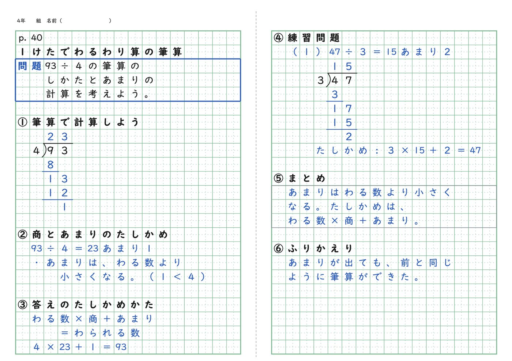
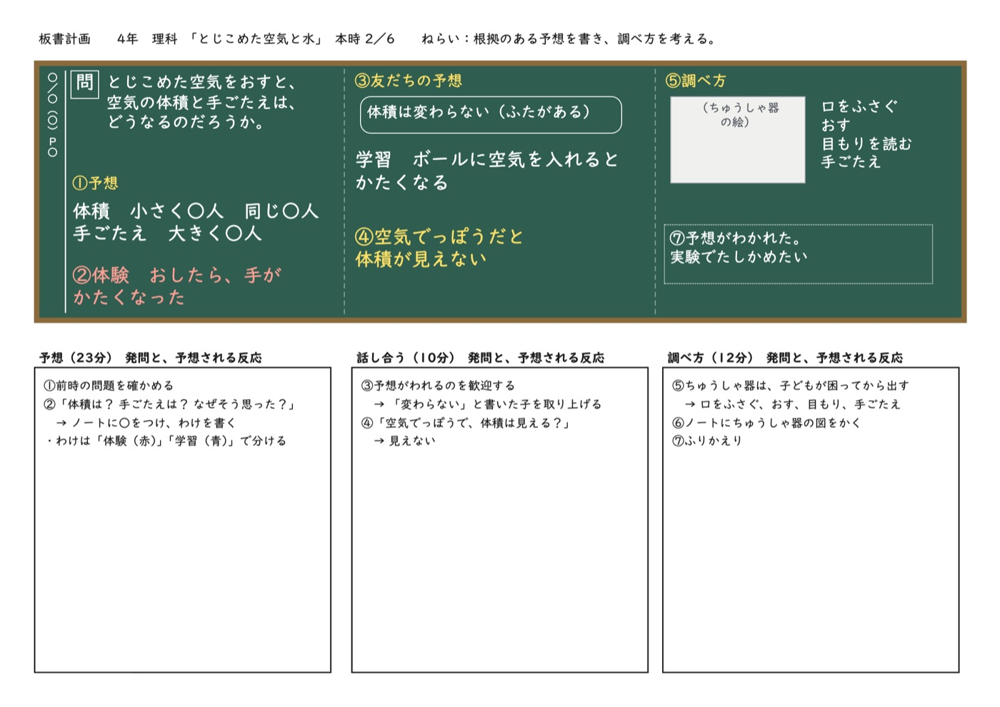
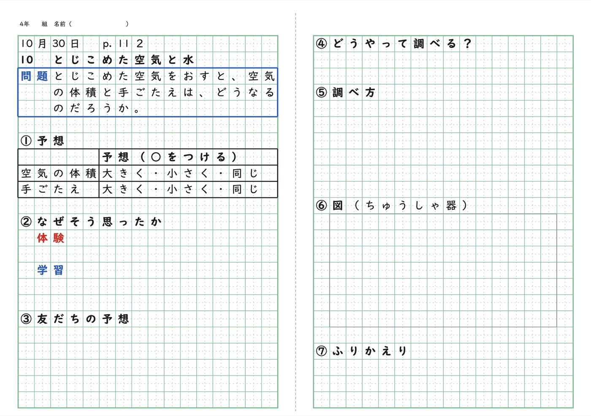
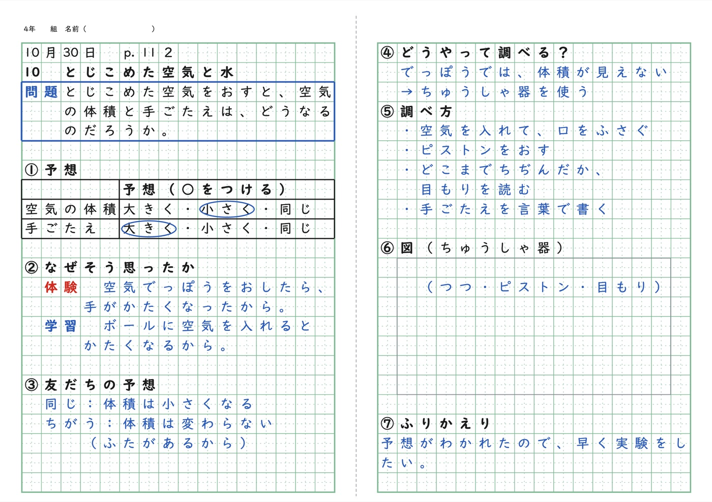

ノートの見本
手が止まる子と、休んだ子に渡す紙を作ります

本時の計画をGeminiに貼ると、配るノートとノートの記入例ができます。板書計画も一緒にできます。
B4で刷って、その子に渡せます。
算数・理科・社会・総合の横書きと、国語の縦書きに使えます。国語の縦書きは、点検を通るまでのやりとりが、横書きより多くなることがあります。
こんな子に渡します
毎時間使うものではありません。この子に渡したい、と思う時間に使います。
| その子 | 渡すもの | いつ渡すか |
|---|---|---|
| 書き方が分からず、手が止まる子 | 配るノートと記入例 | 前の日に刷り、朝、机に置きます |
| 見通しが持てず、不安になる子 | 板書計画 | 授業の前に渡しておきます |
| 休んで戻ってきた子 | 配るノートと記入例 | 戻ってきたその日に渡します |
| 学校に来られていない子 | 板書計画と配るノート | 家に届けるか、Classroomで配ります |
| マス目の大きいノートを使う子 | 1行12マスや10マスの記入例 | 単元の始まりから使います |
担任をしていると、普通に授業をしていくだけでは、なかなかついていけない子がいます。たぶん、どの学級にもいると思います。本当は、一人一人にできることを全部してあげたいのですが、毎時間その子のために見本を用意するのは、無理でした。完璧にはできなくても、少しは支えられるのではないかと思って、ふだんのGeminiで作れるようにしました。
教科の専門家ではない私が、調べながら作ったものです。おかしなところが出たら、手で直して使ってください。
外﨑顯博（小学校教員）
使い方
- 1スキルを取りこむはじめの1回だけです。下の「スキルの取りこみ方」のとおりに、Geminiに取りこみます。
- 2授業の計画を貼るGeminiの入力欄に「@bansho-note」と打って選び、本時の計画を貼って送ります。指導案の本時の部分をそのまま貼ってかまいません。Geminiが、紙の設計図（JSON）を返します。
- 3組み立てページに貼る3枚の紙ができ、点検もします。直すところが出たときだけ、ボタンでコピーして、Geminiの同じ会話に貼ります。できた紙はB4で刷ります。
スキルの取りこみ方
スキルは、Geminiに仕事の進め方を覚えておいてもらうしくみです。プロンプトと、約束を書いたファイルがひとまとめになっているので、毎回コピーしたり添付したりしなくて済みます。Googleの案内では、スキルはこれまでのGemに代わるものです。
- 上の「スキルをダウンロード」を押して、bansho-note.zip を保存し、開きます（展開します）。bansho-note というフォルダに、5つのファイルが入っています。
- Geminiのスキルの画面を開きます。入力欄で「@」を打ち、「スキル」を選んでも開けます。
- 右上の「作成」から「アップロード」を選びます。
- 「スキルのアップロード」の画面で「ファイル」を押し、bansho-note フォルダの中の5つのファイルをまとめて選びます。
- 名前（bansho-note）、説明、カスタム指示が入ったことを確かめて、右上の「作成」を押します。スキルの一覧の「有効」に bansho-note が出れば、取りこみは終わりです。
- SKILL.mdスキルの本体です。プロンプトと同じ決まりが書いてあります
- yakusoku.md板書とノートの約束。行の数え方と、試して分かったまちがいの例
- kanji.md学年別漢字配当表（1026字）。組み立てページと同じ表です
- mihon-sansu4-hissan.md点検を通った見本（4年算数、筆算のある時間）
- mihon-kokugo4-gon.md点検を通った見本（4年国語、縦書き）
zipを開けないときは、この5つを1つずつダウンロードして、同じように選びます。スキルが新しくなったときは、古い bansho-note を一覧から消してから、取りこみなおします。
Gemini Notebookで、学習指導要領を確かめる
学習指導要領の解説をGemini Notebookのノートブックに入れておくと、めあてやまとめの言葉を、解説の言葉で確かめられます。確かめた言葉を授業の計画に書き足してから、スキルに貼ります。
- Gemini Notebookで「新しいノートブック」を作ります。
- 「ソースを追加」の「ファイルをアップロード」から、学習指導要領解説のPDFを入れます。PDFは文部科学省の「小学校学習指導要領解説」のページにあります。使う教科の編と総則編を入れておきます。
- ノートブックの中で、「4年算数のわり算の筆算は、学習指導要領のどの項目に当たりますか」のように聞きます。答えには、解説のどこから引いたかが示されます。
- 確かめた言葉を授業の計画に書き足して、スキル（@bansho-note）に貼ります。
スキルとノートブックは、別の会話で使います。同じ会話でノートブックをつないでスキルを使ったところ、Geminiが設計図ではなくスライドの資料を作ったり、点検で見つかることがふえたりしました。Googleの案内では、スキルの中にノートブックを入れる機能が、これから使えるようになります。
学校のアカウントで、スキルがまだ使えないとき
Googleの案内では、学校などのGoogle Workspaceでスキルが使えるようになるのは、個人のアカウントより後になります。入力欄で「@」を打っても「スキル」が出てこないときは、次の方法で同じことができます。
- 下の4つのファイルをダウンロードします。
- このページのいちばん下の「プロンプト」をコピーし、「授業の計画」の欄を本時の計画に書きかえます。
- Geminiの入力欄の＋から「ファイルをアップロード」を選び、4つのファイルを添付します。同じ入力欄に、書きかえたプロンプトを貼って送ります。
- 直すときは、同じ会話の中で続けます。
- 板書とノートの約束行の数え方と、試して分かったまちがいの例
- 学年別漢字配当表1年から6年までの1026字
- 見本の設計図（4年算数）横書き、筆算のある時間
- 見本の設計図（4年国語）縦書き
学校のアカウントでGeminiが使えるかどうか、ファイルを添付できるかどうかは、自治体や学校の設定で変わります。学校の情報担当の先生に確かめてください。学校のアカウントでは、しばらくはGemも使えますが、Gemはスキルに置きかわっていくので、このページではすすめていません。
できあがり（4年理科「とじこめた空気と水」第2時）



プロンプト
読みこんでいます…
- スキルを使うときは、このプロンプトをコピーしなくてかまいません。スキルの中に、同じ決まりが入っています。
- 子どもの名前や、学校の外に出せない情報は入れないでください。
- 前の時間の実験の数値などは、「前の時間の結果」の欄に書きます。書かないと、Geminiが数値を作ってしまうことがあります。
- できた紙は、マス目プリントメーカーで開いて、字を直したりPDFにしたりできます。